#install.packages("ggplot2")
library(ggplot2)
#install.packages("tibble")
library(tibble)Art From Code
Art From Code
Getting Started
Exercise 1
# overused data set about cars
mpg# A tibble: 234 × 11
manufacturer model displ year cyl trans drv cty hwy fl class
<chr> <chr> <dbl> <int> <int> <chr> <chr> <int> <int> <chr> <chr>
1 audi a4 1.8 1999 4 auto… f 18 29 p comp…
2 audi a4 1.8 1999 4 manu… f 21 29 p comp…
3 audi a4 2 2008 4 manu… f 20 31 p comp…
4 audi a4 2 2008 4 auto… f 21 30 p comp…
5 audi a4 2.8 1999 6 auto… f 16 26 p comp…
6 audi a4 2.8 1999 6 manu… f 18 26 p comp…
7 audi a4 3.1 2008 6 auto… f 18 27 p comp…
8 audi a4 quattro 1.8 1999 4 manu… 4 18 26 p comp…
9 audi a4 quattro 1.8 1999 4 auto… 4 16 25 p comp…
10 audi a4 quattro 2 2008 4 manu… 4 20 28 p comp…
# ℹ 224 more rows# make a ggplot
mpg |>
# which variables to display and setting the color to one of the variables
# changing the variables from the original values
ggplot(aes(displ, cty, colour = drv)) +
# graph it
geom_point()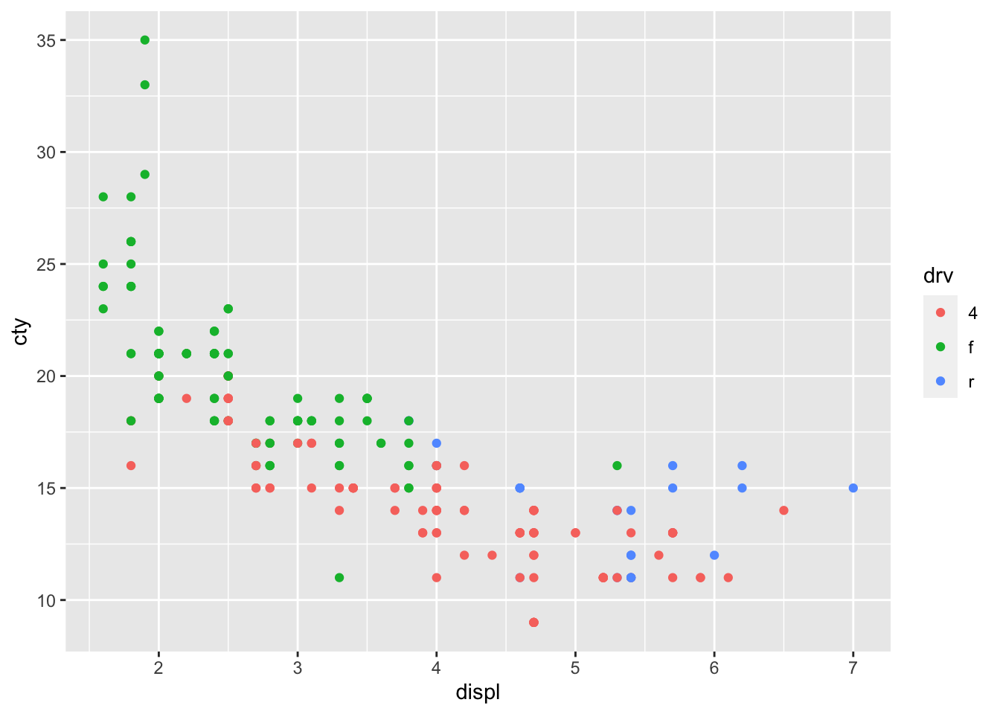
# make the ggplot with a theme
mpg |>
ggplot(aes(displ, cty, colour = drv, size = hwy)) +
geom_point(show.legend = FALSE) +
# gets rid of the axis and labels (more art-like)
theme_void() +
scale_color_brewer()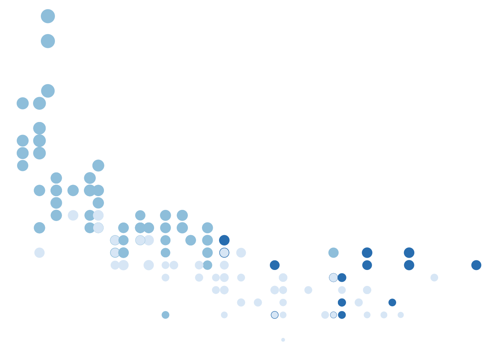
# now make a cooler ggplot
# makes a spiral shape with the same graph from above
mpg |>
ggplot(aes(displ, cty, colour = drv)) +
# make different sized dots
geom_point(show.legend = FALSE, size = 6) +
# change the dot color to green
geom_point(show.legend = FALSE, size = 2, colour = "#299548") +
coord_polar() +
theme_void() +
scale_color_brewer()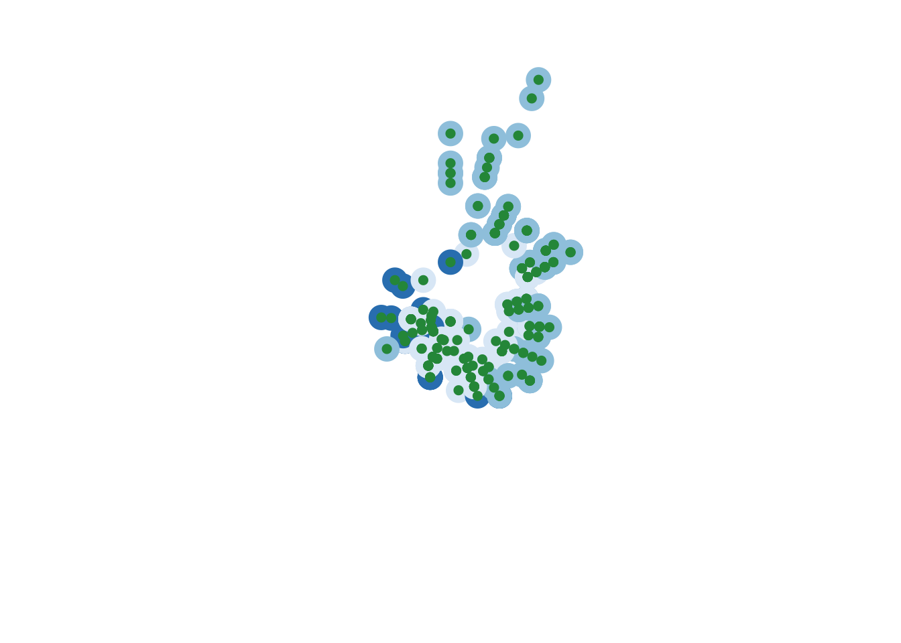
Exercise 2
Part one
# load in packages
library(ggplot2)
library(tibble)
# this is all given, just need to play with the variables
polar_art <- function(seed, n, palette) {
# set the state of the random number generator
set.seed(seed)
# data frame containing random values for
# aesthetics we might want to use in the art
dat <- tibble(
x0 = runif(n),
y0 = runif(n),
# changed the max and min
x1 = x0 + runif(n, min = -.3, max = .3),
y1 = y0 + runif(n, min = -.3, max = .3),
shade = runif(n),
size = runif(n)
)
# plot segments in various colours, using
# polar coordinates and a gradient palette
dat |>
ggplot(aes(
x = x0,
y = y0,
xend = x1,
yend = y1,
colour = shade,
size = size
)) +
geom_segment(show.legend = FALSE) +
coord_polar() +
scale_y_continuous(expand = c(0, 0)) +
scale_x_continuous(expand = c(0, 0)) +
scale_colour_gradientn(colours = palette) +
scale_size(range = c(0, 10)) +
theme_void()
}
polar_art(
# changed the seed
seed = 10,
# changed number of segments plotted
n = 100,
# changed the color palette
palette = c("dodgerblue", "magenta", "brown")
)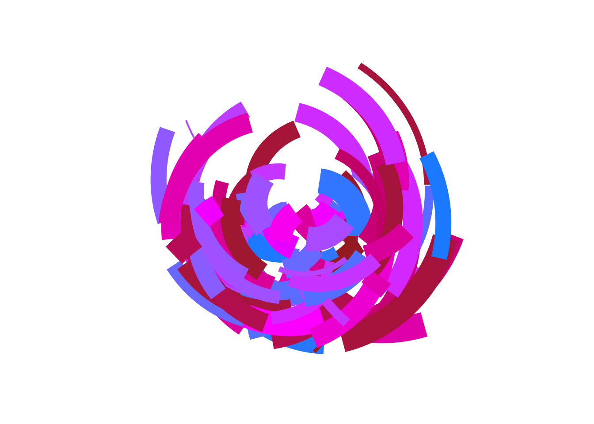
Part two
# told us to name it polar_art_02.R and save as a new file
library(ggplot2)
library(tibble)
# modifying the function itself
# now adding opacity and size_range
polar_art <- function(seed, n, palette, opacity = 1, size_range = c(0, 10), color_scheme = "gradient") {
# set the state of the random number generator
set.seed(seed)
# data frame containing random values for
# aesthetics we might want to use in the art
dat <- tibble(
x0 = runif(n),
y0 = runif(n),
x1 = x0 + runif(n, min = -.2, max = .2),
y1 = y0 + runif(n, min = -.2, max = .2),
# convert shade to be a factor
shade = as.factor(runif(n)),
size = runif(n)
)
# create base ggplot object
p <- ggplot(data = dat, aes(
x = x0,
y = y0,
xend = x1,
yend = y1,
colour = shade,
size = size
))
# add geom_segment layer
p <- p + geom_segment(show.legend = FALSE, alpha = opacity)
# set coordinate system to polar
p <- p + coord_polar()
# Add scale, size range, and color scheme
p <- p + scale_y_continuous(expand = c(0, 0))
p <- p + scale_x_continuous(expand = c(0, 0))
if (color_scheme == "gradient") {
p <- p + scale_colour_gradientn(colours = palette)
} else {
unique_shades <- levels(dat$shade)
num_shades <- length(unique_shades)
colors <- palette[seq_len(num_shades)]
p <- p + scale_colour_manual(values = colors)
}
p <- p + scale_size(range = size_range)
# apply theme
p <- p + theme_void()
# return final ggplot object
return(p)
}
# changed all these variables to play with size, color, and repetition
polar_art(
seed = 9,
n = 99,
palette = c("cyan", "red", "purple"),
opacity = 0.8,
size_range = c(3, 7),
color_scheme = "manual"
)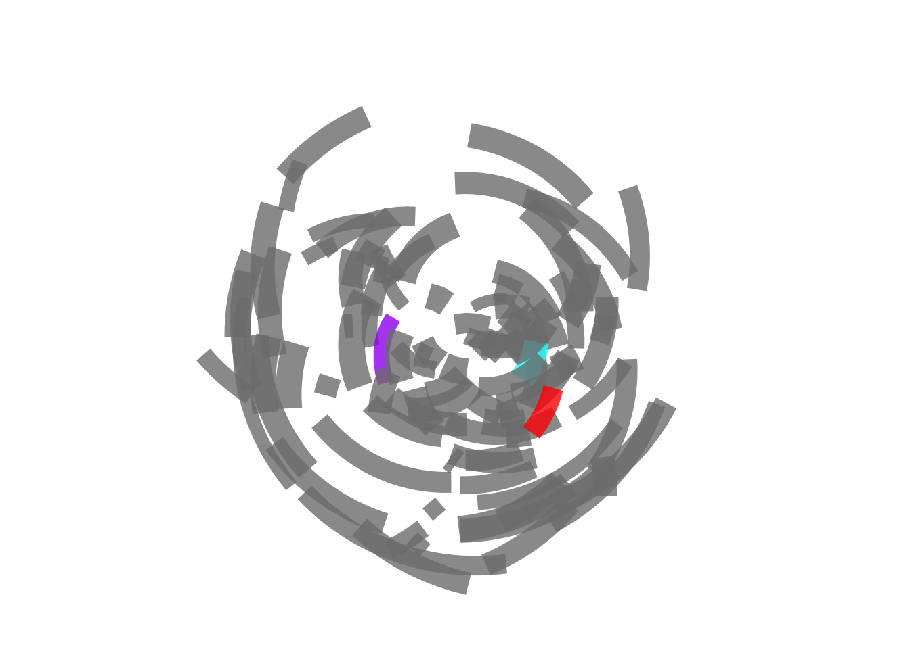
Part three: Perhaps in an art context, artists will make multiple versions of their art. Just like how I made two versions of an art piece (same style) but slightly differ function, artists probably do the same and because they have so many trials, they need to have a common name to keep track of them.
Exercise 3
# call in library
library(ggthemes)
library(scales)
# the original function from the first session
sample_canva <- function(seed = NULL) {
if (!is.null(seed)) set.seed(seed)
sample(ggthemes::canva_palettes, 1)[[1]]
}
# exercise 2 pt 1
# set the palette to the premade canva ones
palette <- sample_canva()
# show function
show_col(palette)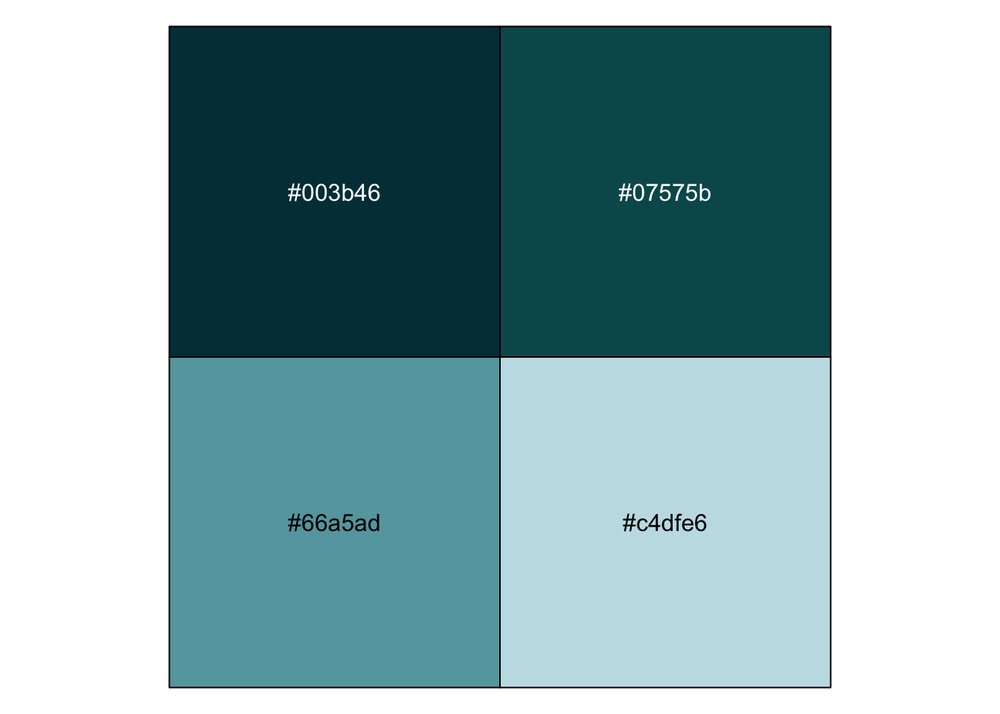
# exercise 2 pt 2
# code function that takes n as input and returns sample of n of these colors
sample_named_colours <- function(n) {
# show the possible colors
possible_colours <- colours(distinct = TRUE)
sample(possible_colours, n)
}
# number of segements
n <- 100
# generating sample of named colors
colors <- sample_named_colours(n)
# convert colors to a factor
colors <- factor(colors)
polar_art(seed = 123, n = n, palette = colors) +
scale_color_manual(values = as.character(unique(colors)))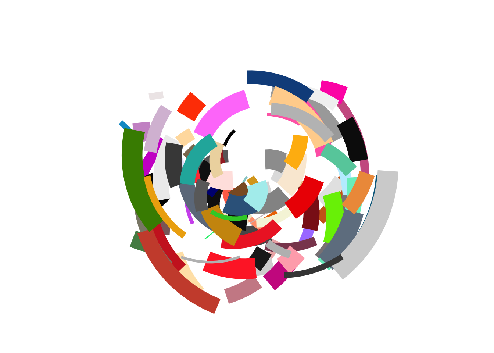
# exercise 2 pt 3
# break color constraint
sample_canva_custom <- function(n) {
colors <- unlist(ggthemes::canva_palettes)
palette <- sample(colors, n)
# Convert palette to a factor
palette <- factor(palette)
polar_art(seed = 123, n = n, palette = palette) +
scale_color_manual(values = as.character(unique(palette)))
}
# call the function
sample_canva_custom(100)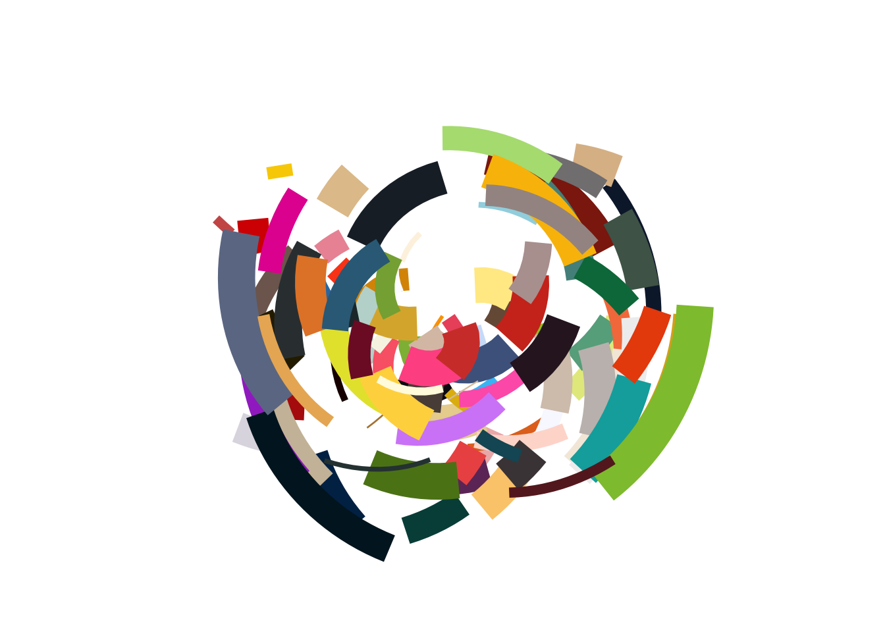
Exercise 4
# load in needed libraries
library(ggplot2)
library(tibble)
library(dplyr)
# function to make random palette
sample_canva <- function(seed = NULL) {
if(!is.null(seed)) set.seed(seed)
sample(ggthemes::canva_palettes, 1)[[1]]
}
# function to generate sample data
sample_data <- function(seed = NULL, n = 100){
if(!is.null(seed)) set.seed(seed)
dat <- tibble(
x0 = runif(n),
y0 = runif(n),
x1 = x0 + runif(n, min = -.2, max = .2),
y1 = y0 + runif(n, min = -.2, max = .2),
shade = runif(n),
size = runif(n),
shape = factor(sample(0:22, size = n, replace = TRUE))
)
}
# function to create a polar styled plot using ggplot2
polar_styled_plot <- function(data = NULL, palette) {
ggplot(
data = data,
mapping = aes(
x = x0,
y = y0,
xend = x1,
yend = y1,
colour = shade,
size = size
)) +
coord_polar(clip = "off") +
scale_y_continuous(
expand = c(0, 0),
limits = c(0, 1),
oob = scales::oob_keep
) +
scale_x_continuous(
expand = c(0, 0),
limits = c(0, 1),
oob = scales::oob_keep
) +
scale_colour_gradientn(colours = palette) +
scale_size(range = c(0, 10)) +
theme_void() +
guides(
colour = guide_none(),
size = guide_none(),
fill = guide_none(),
shape = guide_none()
)
}
# exercise 3 pt 1
# (1) generate data
set.seed(100)
data <- sample_data(n = 50)
# group and summarize data
data_avg <- data %>%
group_by(shade, size) %>%
summarise(avg_size = mean(size),
x0 = mean(x0),
y0 = mean(y0),
x1 = mean(x1),
y1 = mean(y1))
# (2) initialize the plot
palette <- sample_canva(seed = 500)
plot <- polar_styled_plot(data = data_avg, palette = palette)
# (3) add ggplot2 geoms
plot <- plot +
geom_tile(aes(x = x0, y = avg_size, fill = shade), width = 0.1) +
labs(title = "Polar Styled Plot") +
theme(plot.title = element_text(hjust = 0.5))
print(plot)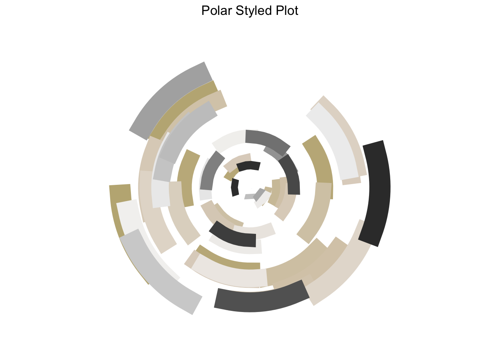
# exercise 3 pt 2
# function to create a customized styled plot using ggplot2
my_styled_plot <- function(data = NULL, palette) {
ggplot(
data = data,
mapping = aes(
x = x0,
y = y0,
xend = x1,
yend = y1,
colour = shade,
size = size
)) +
coord_polar(clip = "off") +
scale_y_continuous(
expand = c(0, 0),
limits = c(0, 1),
oob = scales::oob_keep
) +
scale_x_continuous(
expand = c(0, 0),
limits = c(0, 1),
oob = scales::oob_keep
) +
scale_colour_gradientn(colours = palette) +
scale_size(range = c(0, 10)) +
# theme to dark
theme_dark() +
theme(
# giving the plot grid lines
panel.grid.major = element_line(color = "brown", linetype = "dashed"),
# no minor grid lines though
panel.grid.minor = element_blank(),
# giving the plot a custom title
plot.title = element_text(color = "dodgerblue3", size = 18, face = "bold")
) +
guides(
colour = guide_none(),
size = guide_none(),
fill = guide_none(),
shape = guide_none()
)
}
# generate data
set.seed(100)
data <- sample_data(n = 50)
# group and summarize the data
data_avg <- data %>%
group_by(shade, size) %>%
summarise(avg_size = mean(size),
x0 = mean(x0),
y0 = mean(y0),
x1 = mean(x1),
y1 = mean(y1))
# initialize the plot
palette <- sample_canva(seed = 500)
plot <- my_styled_plot(data = data_avg, palette = palette)
# add ggplot2 geoms
plot <- plot +
geom_tile(aes(x = x0, y = avg_size, fill = shade), width = 0.1) +
labs(title = "My Styled Plot") +
theme(plot.title = element_text(hjust = 0.5))
print(plot)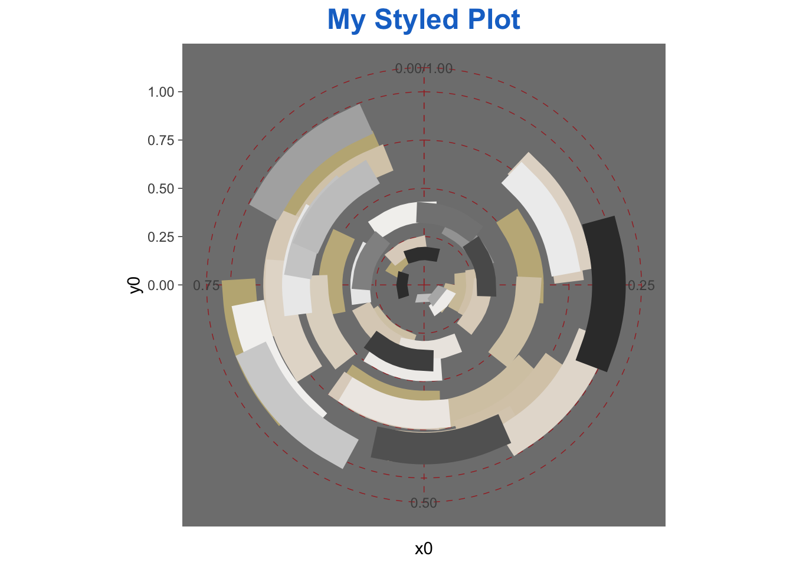
Spatial Noise Tricks
Exercise 1
# call in libraries
library(dplyr)
library(purrr)
library(tibble)
library(ggplot2)
library(ggthemes)
library(ambient)
# function to make random palette
sample_canva <- function(seed = NULL) {
if(!is.null(seed)) set.seed(seed)
sample(ggthemes::canva_palettes, 1)[[1]]
}
# setting the dimensions of the "canvas"
x_coords <- seq(from = 0, to = 1, length.out = 800)
y_coords <- seq(from = 0, to = 1, length.out = 800)
canvas <- long_grid(x = x_coords, y = y_coords)
# changed all of the following inputs
# freqeuncy parameter for gen_perlin
freq_spatial <- 101
# seed parameter for gen_perlin
seed_spatial <- 1001
# seed for random palette generation
seed_palette <- 201
dat <- canvas |>
mutate(
paint = gen_perlin(
x = x,
y = y,
frequency = freq_spatial,
seed = seed_spatial
)
)
pic <- dat |>
ggplot(aes(x, y, fill = paint)) +
geom_raster(show.legend = FALSE) +
theme_void() +
coord_equal() +
scale_x_continuous(expand = c(0, 0)) +
scale_y_continuous(expand = c(0, 0)) +
scale_fill_gradientn(
colours = sample_canva(seed_palette)
)
plot(pic)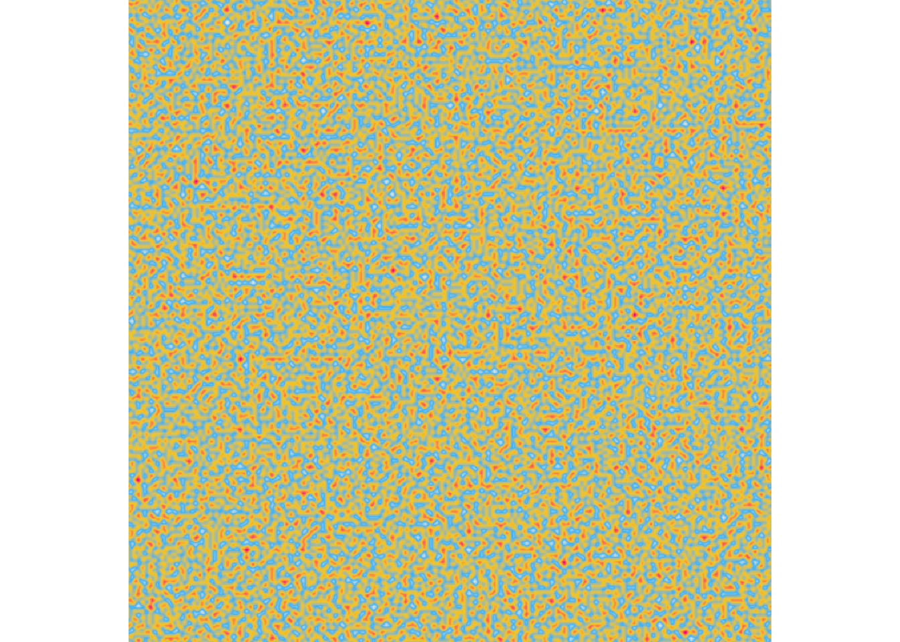
Exercise 2
Part one
# spatial exercise 2 pt 1
library(dplyr)
library(purrr)
library(tibble)
library(ggplot2)
library(ggthemes)
library(ambient)
library(here)
# random palette
sample_canva <- function(seed = NULL) {
if (!is.null(seed)) set.seed(seed)
sample(ggthemes::canva_palettes, 1)[[1]]
}
# make noise art function with gen_perlin
make_noise_art <- function(
generator = gen_perlin,
frequency = 100,
seed = 2000,
pixels = 20000,
palette = c("#e5ddc2", "#01949b", "#004362", "#db1f41"),
...
) {
# define the grid
canvas <- expand.grid(
x = seq(from = 0, to = 1, length.out = pixels),
y = seq(from = 0, to = 1, length.out = pixels)
)
# use the generator to add paint
canvas <- canvas %>%
mutate(
paint = generator(
x, y,
frequency = frequency,
seed = seed,
...
)
)
# use ggplot2 to draw the picture
art <- ggplot(canvas, aes(x, y, fill = paint)) +
geom_raster(show.legend = FALSE) +
theme_void() +
coord_equal() +
scale_x_continuous(expand = c(0, 0)) +
scale_y_continuous(expand = c(0, 0)) +
scale_fill_gradientn(colours = palette)
return(art)
}
# call make_noise_art with idiosyncratic parameters
art <- make_noise_art(
generator = gen_worley,
seed = 2000,
palette = sample_canva(200),
value = "distance",
pixels = 2000
)
# print the plot
print(art)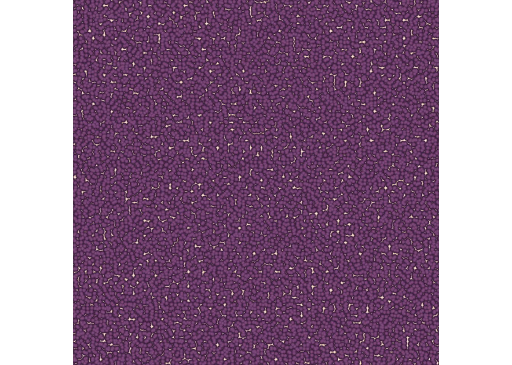
# save the plot to file with a generic file name
ggsave(
filename = here("output", "noise-art.png"),
plot = art,
width = 2000,
height = 2000,
units = "px",
dpi = 200
)Part two
# import libraries
library(dplyr)
library(purrr)
library(tibble)
library(ggplot2)
library(ggthemes)
library(ambient)
library(here)
#install.packages("lubridate")
# timestamps package
library(lubridate)
# generate unique filename
generate_filename <- function(prefix) {
timestamp <- format(Sys.time(), "%Y%m%d%H%M%S")
filename <- paste0(prefix, "_", timestamp, ".png")
return(filename)
}
# rest of code goes here
# save the plot to a file with a unique filename
output_dir <- here("output")
filename <- generate_filename("noise-art")
ggsave(
filename = file.path(output_dir, filename),
plot = art,
width = 2000,
height = 2000,
units = "px",
dpi = 200
)Exercise 3
Part one
# change generator, fractal, freq_init, octaves, seed, and palette
# load in libraries
library(dplyr)
library(purrr)
library(tibble)
library(ggplot2)
library(ggthemes)
library(ambient)
library(here)
# define sample_canva
sample_canva <- function(seed = NULL) {
if (!is.null(seed))
set.seed(seed)
sample(ggthemes::canva_palettes, 1)[[1]]
}
# define blank_canvas
blank_canvas <- expand.grid(
x = seq(from = 0, to = 1, length.out = 2000),
y = seq(from = 0, to = 1, length.out = 2000)
)
# define plot_painted_canvas
plot_painted_canvas <- function(canvas, palette = NULL) {
if (is.null(palette)) {
palette <- c("#e5ddc8", "#01949a", "#004369", "#db1f48")
}
ggplot(data = canvas, aes(x, y, fill = paint)) +
geom_raster(show.legend = FALSE) +
theme_void() +
coord_equal() +
scale_x_continuous(expand = c(0, 0)) +
scale_y_continuous(expand = c(0, 0)) +
scale_fill_gradientn(colours = palette)
}
# define fractal_art
fractal_art <- function(generator, palette = NULL, ...) {
canvas <- blank_canvas %>%
dplyr::mutate(paint = generator(x, y, ...))
plot_painted_canvas(canvas, palette)
}
# define custom generator function
my_generator <- function(x, y, ...) {
noise <- runif(length(x))
return(noise)
}
# frequency value for first octave
freq_init <- 100
# number of octaves
octaves <- 6
# seed value
seed <- 98765
# palette colors
palette <- c("#ff0000", "#00ff00", "#0000ff")
# generate and plot fractal art
fractal_art(
generator = my_generator,
palette = palette,
freq_init = freq_init,
octaves = octaves,
seed = seed
)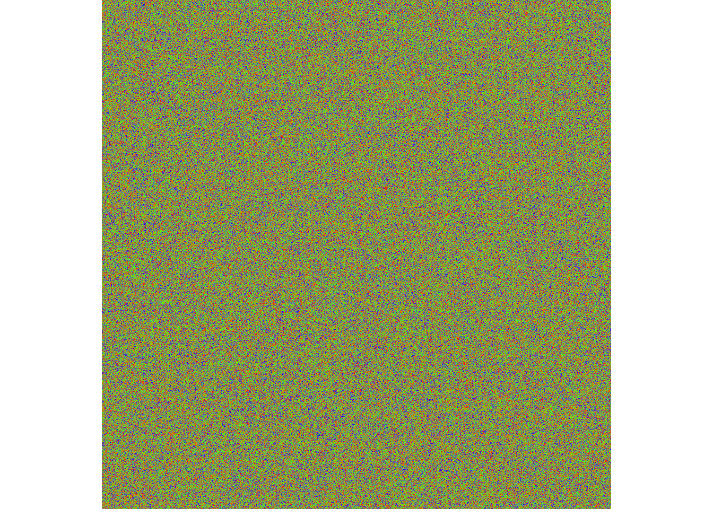
Part two
# define sample_canva
sample_canva <- function(seed = NULL) {
if (!is.null(seed))
set.seed(seed)
sample(ggthemes::canva_palettes, 1)[[1]]
}
# define blank_canvas
blank_canvas <- expand.grid(
x = seq(from = 0, to = 1, length.out = 2000),
y = seq(from = 0, to = 1, length.out = 2000)
)
# define plot_painted_canvas
plot_painted_canvas <- function(canvas, palette = NULL) {
if (is.null(palette)) {
palette <- c("#e5ddc8", "#01949a", "#004369", "#db1f48")
}
ggplot(data = canvas, aes(x, y, fill = paint)) +
geom_raster(show.legend = FALSE) +
theme_void() +
coord_equal() +
scale_x_continuous(expand = c(0, 0)) +
scale_y_continuous(expand = c(0, 0)) +
scale_fill_gradientn(colours = palette)
}
# Define the fractal_art function
fractal_art <- function(generator, palette = NULL, ...) {
canvas <- blank_canvas %>%
dplyr::mutate(paint = generator(x, y, ...))
plot_painted_canvas(canvas, palette)
}
# define custom generator function for ugly fractal
my_ugly_generator <- function(x, y, freq_init, octaves, seed) {
# generate random noise with high frequency
noise <- rnorm(length(x), mean = 0.5, sd = 0.2)
# add multiple octaves with random noise
for (i in 1:octaves) {
freq <- freq_init * 2^(i-1)
# diff seeds for diff octaves
set.seed(seed + i)
noise <- noise + rnorm(length(x), mean = 0, sd = 0.2/freq) * freq
}
return(noise)
}
# frequency value for first octave
freq_init <- 100
# the number of octaves
octaves <- 6
# the seed value
seed <- 98765
# palette for ugly fractal
palette <- c("#ff00ff", "#00ffff", "#ff0000")
# plot ugly fractal art
fractal_art(
generator = my_ugly_generator,
palette = palette,
freq_init = freq_init,
octaves = octaves,
seed = seed
)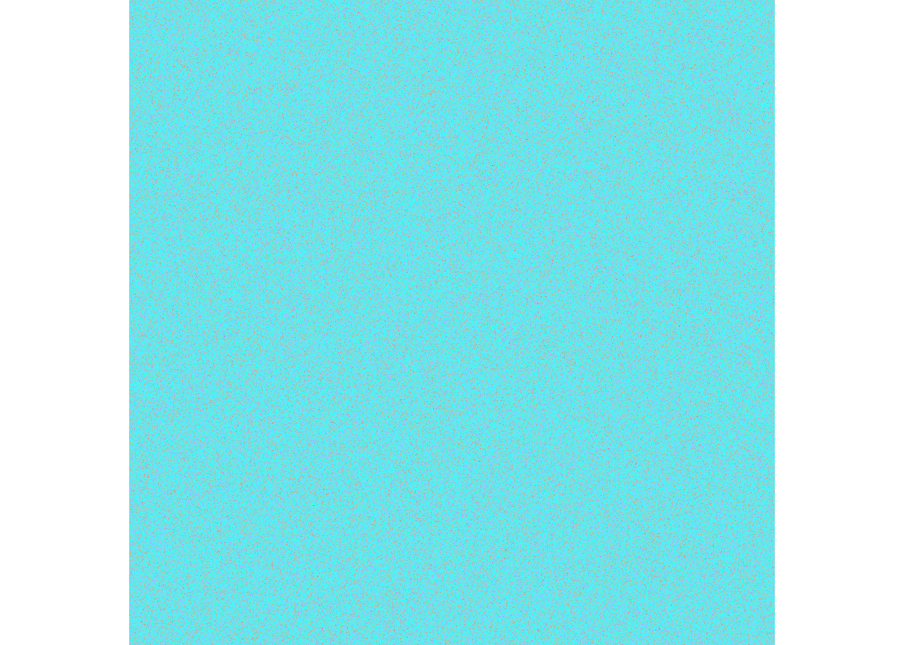
Part three
custom_fracture <- function(x...) {
fracture(
my_gain = function(strength) {strength * 0.5},
my_frequency = function(frequency) {frequency / 2 + 2},
noise = gen_perlin,
fractal = fbm,
x = x * log10(x)
)
}
fractal_art <- function(fractal, generator, palette = NULL, ...) {
blank_canvas |>
mutate(
paint = fracture(
noise = my_generator,
fractal = fractal,
x = x,
y = y,
...
)
) |>
plot_painted_canvas(palette = palette)
}
# dat <- tibble(
# x = seq(0, 10, length.out = 1000),
# y8 = fracture(x = x, noise = gen_perlin, fractal = fbm, octaves = 8))
gf <- function(x) x / log10(x)
fractal_art(ridged, gen_perlin, seed = 2, octaves = 3, my_gain = gf)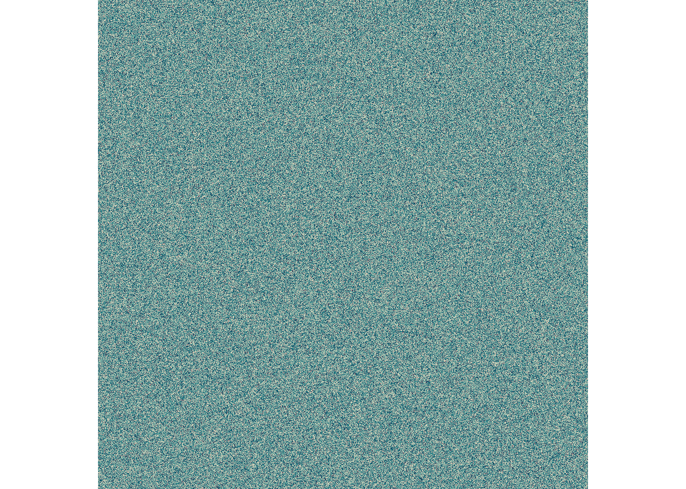
Part four
# make my own gen_scope and gen_gate function
gen_sentence <- function() {
# make a function what will generate sentences
greetings <- c("Hey", "Howdy", "Sup", "Hi")
# need a subject
subjects <- c("earth", "everyone", "there", "people")
# need a verb
verbs <- c("is", "are", "seems", "appears")
# need an adjective
adjectives <- c("awesome", "crazy", "insane", "amazing")
# piecing it all together
greeting <- sample(greetings, 1)
subject <- sample(subjects, 1)
verb <- sample(verbs, 1)
adjective <- sample(adjectives, 1)
sentence <- paste(greeting, subject, verb, adjective, "!", sep = " ")
return(sentence)
}
# run the sentence
sentence <- gen_sentence()
cat(sentence)Howdy people are awesome !Exercise 4
Part one: curl-art-1.R took 1.802 seconds to render and curl-art-2.R took 0.421 seconds to render, so the difference is 1.381 seconds, which is relatively large proportion.
Part two
# load required libraries
library(dplyr)
library(purrr)
library(tibble)
library(ggplot2)
library(ggthemes)
library(ambient)
library(here)
library(tictoc)
library(magrittr)
# define the curl_data function
curl_data <- function(
data,
iterations = 50,
step_size = 0.01,
noise = gen_simplex,
fractal = fbm,
octaves = 1,
freq_init = 1,
...
) {
# define the update function
update <- function(current_state, iteration, ...) {
curl <- curl_noise(
x = current_state$x,
y = current_state$y,
generator = noise,
...
)
next_state <- mutate(
current_state,
x = x + curl$x * step_size,
y = y + curl$y * step_size,
time = time + 1
)
return(next_state)
}
# add new columns to the data
data <- mutate(data, id = row_number(), time = 1)
accum <- data
for (i in 1:iterations) {
# asssign same values as data in the data frame
accum <- update(accum, i)
data <- bind_rows(data, accum)
}
return(data)
}
# define number of iterations
iterations <- 5
# define and populate the data frame
data <- tibble(x = numeric(), y = numeric())
# populate the data frame with sample values
data <- data %>%
add_row(x = 1, y = 2) %>%
add_row(x = 3, y = 4)
# apply update function iteratively using a loop
result <- data %>%
mutate(id = row_number(), time = 1) %>%
curl_data(iterations = iterations)
# define the curl_art function
curl_art <- function(data, ...) {
ggplot(data) +
geom_path(aes(x = x, y = y), ...) + # Remove the 'group = id' aesthetic
theme_void() +
coord_equal()
}
# create a small grid
smol_grid <- tibble(
x = seq(1, 20, by = 0.1),
y = seq(1, 20, by = 0.1)
)
# generate the curl art
pic <- smol_grid %>%
mutate(x = normalize(x), y = normalize(y)) %>%
curl_art(data = .)
# save output image
tic()
ggsave(
filename = here("output", "curl-art-1.png"),
plot = pic,
width = 2000,
height = 2000,
units = "px",
dpi = 300,
bg = "white"
)
toc()0.137 sec elapsedPart three
# import libraries
library(dplyr)
library(purrr)
library(tibble)
library(ggplot2)
library(ggthemes)
library(ambient)
library(here)
library(tictoc)
library(magrittr)
# define the curl_data function
curl_data <- function(
data,
iterations = 50,
step_size = 0.01,
noise = gen_simplex,
fractal = fbm,
octaves = 1,
freq_init = 1
) {
update <- function(current_state, iteration) {
curl <- curl_noise(
x = current_state$x,
y = current_state$y,
generator = noise
)
next_state <- mutate(
current_state,
x = x + curl$x * step_size,
y = y + curl$y * step_size,
time = time + 1
)
return(next_state)
}
data <- mutate(data, id = row_number(), time = 1)
accum <- data
for (i in 1:iterations) {
accum <- update(accum, i)
data <- bind_rows(data, accum)
}
return(data)
}
# define the number of iterations
iterations <- 100 # Increase number of iterations for more complex patterns
# define custom parameters
custom_parameters <- list(
# noise generator
noise = gen_simplex,
# fbm fractal
fractal = fbm,
# when you increase the number of octaves, there is more detail
octaves = 5,
# can adjust initial frequency
freq_init = 0.5
)
# apply update function iteratively using a loop
result <- data %>%
mutate(id = row_number(), time = 1) %>%
curl_data(iterations = iterations, noise = custom_parameters$noise,
fractal = custom_parameters$fractal, octaves = custom_parameters$octaves,
freq_init = custom_parameters$freq_init)
# define custom palette
custom_palette <- c("#FFa000", "#92FF55", "#6600FF")
# define the curl_art function with custom palette
curl_art <- function(data) {
unique_ids <- unique(data$id)
num_ids <- length(unique_ids)
palette_size <- max(num_ids, length(custom_palette))
custom_palette <- custom_palette[1:palette_size]
ggplot(data) +
geom_path(aes(x = x, y = y, group = factor(id), color = factor(id)), size = 1) +
# convert id to a factor
theme_void() +
coord_equal() +
# set custom palette
scale_color_manual(values = custom_palette)
}
# generate customized curl art
pic <- curl_art(data = result)
# save the output image
tic()
ggsave(
# set custom filename
filename = here("output", "custom-curl-art.png"),
plot = pic,
width = 2000,
height = 2000,
units = "px",
dpi = 300,
bg = "white"
)
toc()0.148 sec elapsedIterated Function Systems
Exercise 1
# import libraries
library(ggplot2)
library(tibble)
library(purrr)
library(dplyr)
# making a tree instead of a fern
tree_transform <- function(coord, ind) {
# coefficients for the trunk function f_trunk
if (ind == 1) {
mat <- matrix(c(0, 0, 0, 0.16), 2, 2)
off <- c(0, 0)
}
# coefficients for the left branch function f_left_branch
if (ind == 2) {
mat <- matrix(c(-0.15, 0.28, 0.26, 0.24), 2, 2)
off <- c(0, 0.44)
}
# coefficients for the right branch function f_right_branch
if (ind == 3) {
mat <- matrix(c(0.15, 0.28, -0.26, 0.24), 2, 2)
off <- c(0, 0.44)
}
# coefficients for the leaf function f_leaf
if (ind == 4) {
mat <- matrix(c(0.85, 0.04, -0.04, 0.85), 2, 2)
off <- c(0, 1.6)
}
# return the affine transformed coordinates
coord <- mat %*% coord + off
return(coord)
}
tree_chaos <- function(iterations = 10000, seed = NULL) {
if (!is.null(seed)) set.seed(seed)
# which transformation to apply at each iteration
transform_index <- sample(
x = 1:4,
size = iterations,
replace = TRUE,
prob = c(0.02, 0.45, 0.45, 0.08)
)
# initialise chaos game at the origin
start <- matrix(c(0, 0))
# helper function to collapse accumulated output
bind_to_column_matrix <- function(lst) {
do.call(cbind, lst)
}
# iterate until done
coord_matrix <- transform_index |>
accumulate(tree_transform, .init = start) |>
bind_to_column_matrix()
# tidy the output, add extra columns, and return
coord_df <- t(coord_matrix) |>
as.data.frame()
names(coord_df) <- c("x", "y")
coord_df <- coord_df |>
as_tibble() |>
mutate(
transform = c(0, transform_index),
iteration = row_number() - 1
)
return(coord_df)
}
tree_dat <- tree_chaos(seed = 1)
# pulling it all together and adding transformation key on the side
pic <- ggplot(tree_dat, aes(x, y, colour = factor(transform))) +
geom_point(size = 2, stroke = 0.1, alpha = 0.5) +
coord_equal() +
theme_void() +
guides(colour = guide_legend(
title = "Transformation",
override.aes = list(size = 2)
))
plot(pic)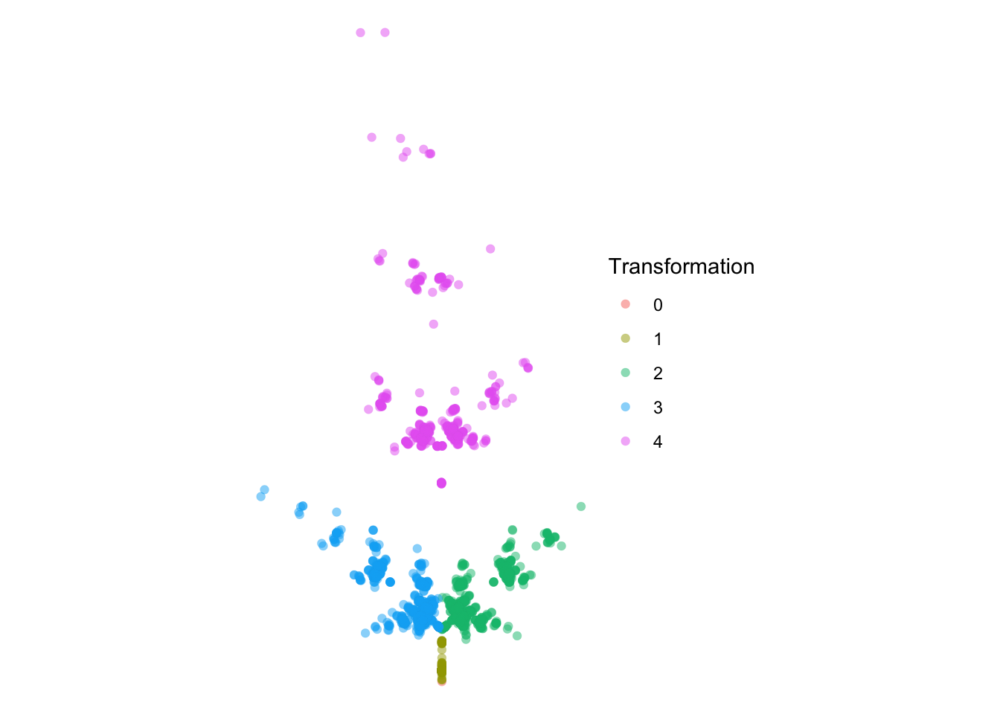
Exercise 2
# load in packages
library(ggplot2)
library(tibble)
library(purrr)
library(dplyr)
library(tictoc)
library(ggthemes)
library(here)
# sampling a color palette
sample_canva2 <- function(seed = NULL, n = 4) {
if (!is.null(seed)) set.seed(seed)
sample(ggthemes::canva_palettes, 1)[[1]] |> (\(x) colorRampPalette(x)(n))()
}
# list of variant functions for transformation that I want
funs <- list(
function(point) point + (sum(point ^ 2)) ^ (1 / 3),
function(point) sin(point),
function(point) 2 * sin(point)
)
# updated the custom_transform function
custom_transform <- function(point) {
point + (sum(point ^ 2)) ^ (1 / 3) * 0.5
}
# also updated the unboxer_custom function
unboxer_custom <- function(iterations, seed = NULL) {
if (!is.null(seed)) set.seed(seed)
point0 <- matrix(data = runif(3, min = -1, max = 1), nrow = 1, ncol = 3)
points <- accumulate(rep(1, iterations), ~ custom_transform(.x), .init = point0)
points <- matrix(unlist(points), ncol = 3, byrow = TRUE)
points <- cbind(points, c(0, rep(1, iterations)), c(0, rep(1, iterations)))
return(points)
}
# function to generate the final plot
unbox_art <- function(data, seed = NULL, size = 1) {
data <- data |> as.data.frame() |> as_tibble()
names(data) <- c("x", "y", "c", "l", "t")[1:ncol(data)]
shades <- sample_canva2(seed)
ggplot(data, aes(x, y, colour = c)) +
geom_point(
size = size,
stroke = 0,
show.legend = FALSE
) +
theme_void() +
coord_equal(xlim = c(-4, 4), ylim = c(-4, 4)) +
scale_colour_gradientn(colours = shades) +
scale_x_continuous(expand = c(0, 0)) +
scale_y_continuous(expand = c(0, 0)) +
theme(panel.background = element_rect(fill = shades[1], colour = shades[1]))
}
tic()
seed <- 1234
# generate transformation points and make the plot
pic <- unboxer_custom(1000000, seed = seed) |> unbox_art(seed = seed, size = 2)
fname <- paste0("unboxer-custom-", seed, ".png")
# save plot as image file
ggsave(
filename = here("output", fname),
plot = pic,
width = 2000,
height = 2000,
units = "px",
dpi = 300
)
toc()8.159 sec elapsedExercise 3
unbox_art <- function(data, seed = NULL, size = 1) {
# convert to data frame and sample a palette
data <- data |> as.data.frame() |> as_tibble()
names(data) <- c("x", "y", "c", "l", "t")[1:ncol(data)]
shades <- sample_canva2(seed)
# render image as a scatter plot
ggplot(data, aes(x, y, colour = c)) +
geom_point(
size = size,
stroke = 0,
show.legend = FALSE
) +
theme_void() +
coord_equal(xlim = c(-4, 4), ylim = c(-4, 4)) +
scale_colour_gradientn(colours = shades) +
scale_x_continuous(expand = c(0, 0)) +
scale_y_continuous(expand = c(0, 0)) +
theme(panel.background = element_rect(
fill = shades[1], colour = shades[1]
))
}Exercise 4
library(tictoc)
library(Rcpp)
library(here)
sourceCpp(file = here("materials", "unbox-grid.cpp"))
sample_canva2 <- function(seed = NULL, n = 4) {
if(!is.null(seed)) set.seed(seed)
sample(ggthemes::canva_palettes, 1)[[1]] |>
(\(x) colorRampPalette(x)(n))()
}
pretty_boxes <- function(
seed,
iterations = 100000000,
layers = 5,
pixels = 4000,
background = "black",
border = 4,
trim = .001
) {
set.seed(seed)
mat <- unboxer_grid(
iterations = iterations,
layers = layers,
pixels = pixels,
border = border
)
shades <- c(background, sample_canva2(seed, n = 1023))
zlim <- quantile(mat, c(trim, 1 - trim))
mat[mat < zlim[1]] <- zlim[1]
mat[mat > zlim[2]] <- zlim[2]
op <- par(mar = c(0, 0, 0, 0))
image(
z = mat,
axes = FALSE,
asp = 1,
useRaster = TRUE,
col = shades
)
par(op)
}
tic()
pretty_boxes(100, iterations = 10000000)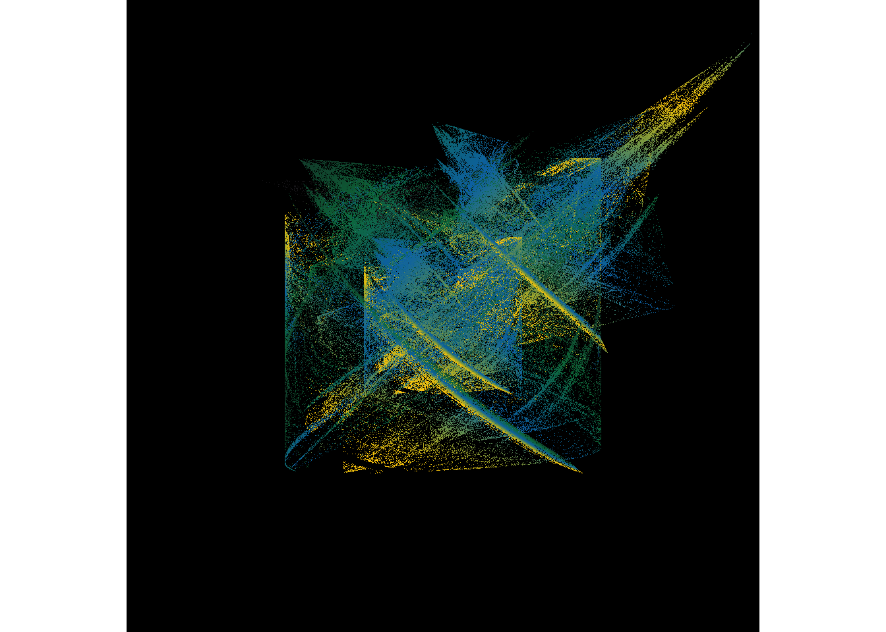
toc()4.325 sec elapsedPutting It all Together
library(ggplot2)
library(tibble)
library(purrr)
library(dplyr)
library(tictoc)
library(ggthemes)
library(here)
library(ambient)
library(gridExtra)
# Function to sample a color palette
sample_canva2 <- function(seed = NULL, n = 4) {
if (!is.null(seed)) set.seed(seed)
sample(ggthemes::canva_palettes, 1)[[1]] |> (\(x) colorRampPalette(x)(n))()
}
# List of variant functions for transformation
funs <- list(
function(point) point + (sum(point ^ 2)) ^ (1 / 3),
function(point) sin(point),
function(point) 2 * sin(point)
)
# Updated custom_transform function
custom_transform <- function(point) {
point + (sum(point ^ 2)) ^ (1 / 3) * 0.5
}
# Updated unboxer_custom function
unboxer_custom <- function(iterations, seed = NULL) {
if (!is.null(seed)) set.seed(seed)
point0 <- matrix(data = runif(3, min = -1, max = 1), nrow = 1, ncol = 3)
points <- accumulate(rep(1, iterations), ~ custom_transform(.x), .init = point0)
points <- matrix(unlist(points), ncol = 3, byrow = TRUE)
points <- cbind(points, c(0, rep(1, iterations)), c(0, rep(1, iterations)))
return(points)
}
# Function to generate the final plot
unbox_art <- function(data, seed = NULL, size = 1) {
data <- data |> as.data.frame() |> as_tibble()
names(data) <- c("x", "y", "c", "l", "t")[1:ncol(data)]
shades <- sample_canva2(seed)
ggplot(data, aes(x, y, colour = c)) +
geom_point(
size = size,
stroke = 0,
show.legend = FALSE
) +
theme_void() +
coord_equal(xlim = c(-4, 4), ylim = c(-4, 4)) +
scale_colour_gradientn(colours = shades) +
scale_x_continuous(expand = c(0, 0)) +
scale_y_continuous(expand = c(0, 0)) +
theme(panel.background = element_rect(fill = shades[1], colour = shades[1]))
}
tic()
# Parameters
seed <- 1234
iterations <- 1000000
size <- 2
# Generate transformation points
points <- unboxer_custom(iterations, seed = seed)
# Convert points to data frame
data <- as.data.frame(points)
colnames(data) <- c("x", "y", "c", "l", "t")
data <- as_tibble(data)
# Make the first plot using unbox_art function
pic1 <- unbox_art(data, seed = seed, size = size)
# Second plot code
sample_canva <- function(seed = NULL) {
if(!is.null(seed)) set.seed(seed)
sample(ggthemes::canva_palettes, 1)[[1]]
}
# Setting the dimensions of the "canvas"
x_coords <- seq(from = 0, to = 1, length.out = 800)
y_coords <- seq(from = 0, to = 1, length.out = 800)
canvas <- long_grid(x = x_coords, y = y_coords)
# Parameters for gen_perlin
freq_spatial <- 101
seed_spatial <- 1001
seed_palette <- 201
dat <- canvas |>
mutate(
paint = gen_perlin(
x = x,
y = y,
frequency = freq_spatial,
seed = seed_spatial
)
)
# Make the second plot
pic2 <- dat |>
ggplot(aes(x, y, fill = paint)) +
geom_raster(show.legend = FALSE) +
theme_void() +
coord_equal() +
scale_x_continuous(expand = c(0, 0)) +
scale_y_continuous(expand = c(0, 0)) +
scale_fill_gradientn(
colours = sample_canva(seed_palette)
)
# Combine and display the plots
grid.arrange(pic1, pic2, ncol = 2)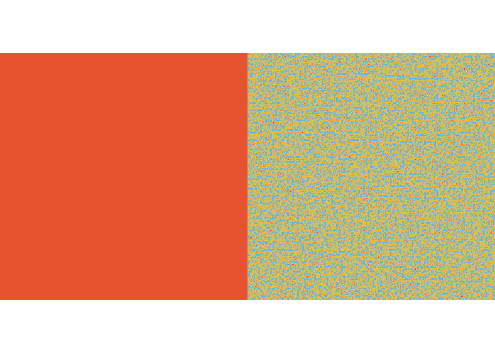
toc()9.665 sec elapsed